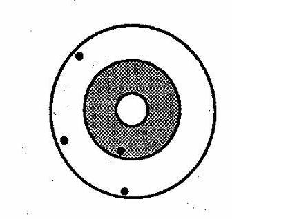

Internal Validity
Lead Author(s): Jeff Martin, MD
What Is Study or Internal Validity?
Study validity is what we refer to as internal validity or a measure of how accurately our study sample represents our source population. As shown below how reflective is our sample population of the reference population?
 Internal validity asks the question “do the results obtained from the actual study subjects accurately represent the source population”?
Internal validity asks the question “do the results obtained from the actual study subjects accurately represent the source population”?
Good Validity - Good Precision
Consider that at the center of the target is the truth and that each shot at the target represents a study you conduct -- a sample of subjects whom you select -- to find the right answer. Here we show five different studies (samples) of the same study design i.e. 5 different samples of the source population. Of course, what you want is this - good validity and good precision.
We say that this is good validity because the average or tendency of the different attempts (different samples) gives you an answer that is right on the truth. For an explanation of precision, see Precision.

Poor Validity - Poor Precision
Now consider the target below where the average of the different studies is far off from the center of the target – this is poor validity. For an explanation of precision, see Precision.

Poor Validity - Good Precision
Consider the target below. We have poor validity. Their average is far away from the center of the target. For an explanation of precision, see Precision.

Good Validity - Poor Precision
Consider the target below. Validity is good in that the average of the different attempts is right on the center. There is nothing systematically wrong with these results. For an explanation of precision, see Precision.